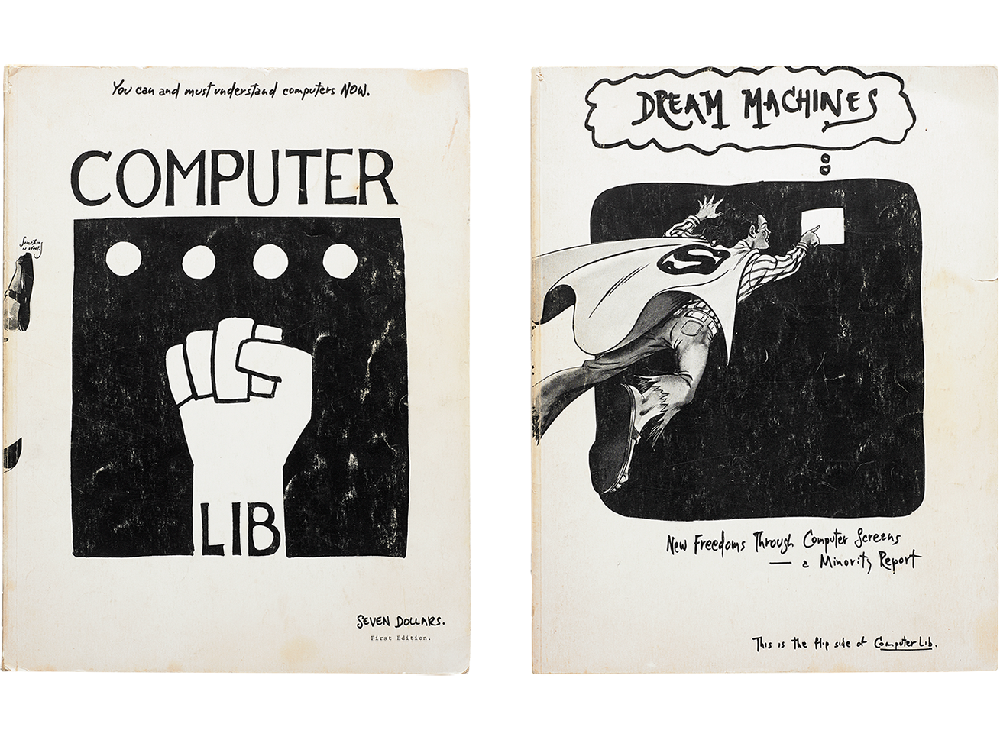

hypertext.html
-
- "american pioneer of information
technology, philosopher and sociologist. he coined the terms hypertext and hypermedia in 1963 and published them in 1965. nelson coined the terms transclusion, virtuality, and intertwingularity (in literary machines), and teledildonics. according to a 1997 forbes profile, nelson "sees himself as a literary romantic, like a cyrano de bergerac, or 'the orson welles of software.'"
- most well known for founding project xanadu, an alternative to the world wide web with unbreakable, two-way links, a simplified copyright system, and side-by-side comparison between connected documents
-
- nelson has written many books on the subject of information technology including:
- Computer Lib / Dream Machines (1974)
The Home Computer Revolution (1977)
Literary Machines (1981)
- 
- coined the term "intertwingularity" in his 1974 book, "computer lib/dream machines"
- ted nelson's personal website
- nelson was included in werner herzog's 2016 film "lo and behold"
-
2types of hypertext
- "hyperlinks, when used in a hypertext document usually replace the current piece of hypertext with the destination document."
- "StretchText, which expands or contracts the content in place, thereby giving more control to the reader in determining the level of detail of the displayed document."
- "transclusion, where text or other content is included by reference and automatically rendered in place."
-
5as we may think
-
6timeline
- the history of hypertext
- 1945
- vannevar bush (science advisor to president roosevelt during wwii) proposes memex in "as we may think."
- 1965
- ted nelson invents the word hypertext.
- 1978
- a team at mit, headed by andrew lippman, develops the aspen movie map, the first true example of a multimedia application including a videodisk. created at the mit architecture machine group, which later becomes the media lab.
- 1987
- apple delivers hypercard free with every macintosh, the first widely available personal hypermedia authoring system. not as simple as html because most documents require writing a script. The acm organizes the first conference on hypertext.
- 1989
- tim berners-lee proposes the world wide web (www)
-
7hypertext markup language
- known as html
- html is the language used to create webpages. "hypertext" refers to the hyperlinks that an html page may contain. "markup language" refers to the way tags are used to define the page layout and elements within the page.
-
8the internet hunt
- what is the internet hunt, 1992
- "what's the capital of liechtenstein? what are the top ten u.s. television programs according to the most recent nielson ratings? can you get aids from kissing? What was the total amount of sales in liquor stores in the united states last september?"
- "rick gates is asking questions like these in a monthly contest dubbed "the Internet Hunt." Participants in the Hunt score points for finding the answers to Gates' questions--but not using traditional reference material like encyclopedias and almanacs. Instead, hunters must find the answers online, using information sources on the net."
- "gates says the internet hunt has accomplished three things: it helps Net users realize the enormous amount of information on the net, and it helps novices--whom he calls "settlers"--understand how to move around the "trails" that more experienced users have blazed. it also provides training in context, which works better for most of us than learning from a book or a chalkboard."
-
9project xanadu
-
10strategies
- seo best practices
- •the trustworthiness of the linking domain.
•the popularity of the linking page.
•the relevancy of the content between the source page and the target page.
the anchor text used in the link.
•The number of links to the same page on the source page.
•the number of root domains that link to the target page.
•the number of variations that are used as anchor text to links to the target page.
•the ownership relationship between the source and target domains.
- How Google warped the hyperlink, wired, 2019
- "today, the major search engines use many metrics to determine the value of external links. Some of these metrics include:"
-
11
-
12
-
13
-
14
-
15
-
16
-
17
-
18
-
19
-
20
-
21
-
22
-
23
-
24
-
25
“by hypertext i mean non-sequential writing - text that branches and allows choices to the reader, best read at an interactive screen. as popularly conceived, this is a series of text chunks connected by links which offer the reader different pathways.”
{kind=link}